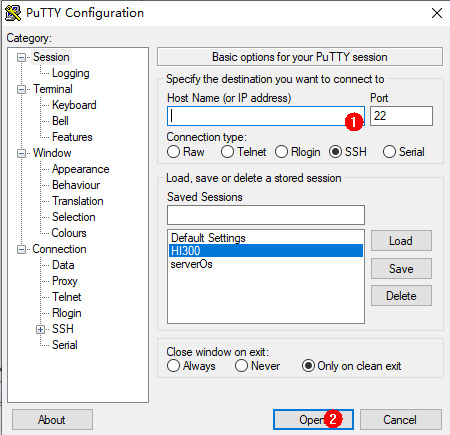

Setting Up a Development Environment¶
Environment Requirements¶
Hardware¶
Linux server
Windows workstation (host computer)
Hi3518EV300 IoT camera development board
USB cable and network cable (The Windows workstation is connected to Hi3518EV300 development board through the USB cable and network cable.)
Figure 1 shows the hardware connections.

Software¶
Table 1 Platforms required for the Hi3518EV300 development board
Hardware | Software | Description | Remarks |
|---|---|---|---|
Linux compile server | Operating system | Ubuntu 16.04 64-bit or later is used for the Linux OS, and bash is used as the shell. Note NOTE: Common software such as samba and vim is installed in the OS by default. Adaptation is required to support Linux file sharing. | You can develop programs on the Windows workstation or on the Linux server through remote login. |
Windows workstation | Operating system | Windows XP/Windows7/Windows10 |
Build Tools for Linux¶
The following table describes the common tools required for Linux and how to obtain them.
Table 2 Development tools and obtaining methods
Development Tool | Description | How to Obtain |
|---|---|---|
Python3.7+ | Runs the compilation scripts. | |
bash | Executes commands. | Internet |
gn | Generates ninja compilation scripts. | https://repo.huaweicloud.com/harmonyos/compiler/gn/1523/linux/gn.1523.tar |
ninja | Executes ninja compilation scripts. | https://repo.huaweicloud.com/harmonyos/compiler/ninja/1.9.0/linux/ninja.1.9.0.tar |
LLVM | Functions as the compiler toolchain. | https://repo.huaweicloud.com/harmonyos/compiler/clang/9.0.0-34042/linux/llvm-linux-9.0.0-34042.tar |
hc-gen | Configures and compiles files. | https://repo.huaweicloud.com/harmonyos/compiler/hc-gen/0.65/linux/hc-gen-0.65-linux.tar |
IPOP, PuTTY, or other HyperTerminal software | Connects to the Linux server (choose one of the terminals). | Internet (for example, https://www.putty.org/) |
Development Tools for Windows¶
Table 3 Development tools for the Windows workstation
Development Tool | Description | How to Obtain |
|---|---|---|
Visual Studio Code | Edits code. | |
HiTool | Burns the images and the U-boot. | http://www.hihope.org/download/AllDocuments Tool package: Hi3516-Hitool.zip |
Installing the Basic Compilation Environment¶
Connecting to a Linux Server¶
Using PuTTY to log in to a Linux server from a PC running Windows
Open PuTTY, enter the IP address of the Linux server, and click Open.
Figure 2 PuTTY configurationClick Yes in the PuTTY Security Alert dialog box.
Enter the account and password.
Figure 3 Login
The login is successful.
Figure 4 Successful login
Changing Linux Shell to Bash¶
Run the following command to check whether bash is used as the shell:
ls -l /bin/sh
If /bin/sh -> bash is not displayed, do as follows to change shell to bash.
Method 1: Run the following command on the device and then click No.
sudo dpkg-reconfigure dash
Method 2: Run the rm -rf /bin/sh command to delete sh and then run the sudo ln -s /bin/bash /bin/sh command to create a new soft link.
sudo rm -rf /bin/sh
sudo ln -s /bin/bash /bin/sh
Installing a Python Environment¶
Start a Linux server.
Run the following command to check the Python version (Python 3.7 or later is required):
python3 --version
Do as follows to install Python, for example, Python 3.8.
Run the following command to check the Ubuntu version:
cat /etc/issue
Install Python based on the Ubuntu version.
If the Ubuntu version is 18 or later, run the following command:
sudo apt-get install python3.8
If the Ubuntu version is 16, download the installation package and install Python.
Run the following command to install Python environment dependencies (gcc, g++, make, zlib, libffi):
sudo apt-get install gcc && sudo apt-get install g++ && sudo apt-get install make && sudo apt-get install zlib* && sudo apt-get install libffi-dev
Obtain the Python3.8.5 installation package, save it to the Linux server, and run the following command:
tar -xvzf Python-3.8.5.tgz && cd Python-3.8.5 && sudo ./configure && sudo make && sudo make install
After Python is installed, run the following command to link the Python path to /usr/bin/python:
which python3.8 cd /usr/bin && sudo rm python && sudo ln -s /usr/local/bin/python3.8 python && python --version
Install and upgrade the Python package management tool (pip3) using either of the following methods:
Command line:
sudo apt-get install python3-setuptools python3-pip -y sudo pip3 install --upgrade pip
Installation package:
curl https://bootstrap.pypa.io/get-pip.py -o get-pip.py python get-pip.py
Run the following command to install setuptools:
pip3 install setuptools
Install the GUI menuconfig tool (Kconfiglib). You are advised to install Kconfiglib 13.2.0 or later.
Command line:
sudo pip3 install kconfiglib
Installation package:
Download the .whl file (for example, kconfiglib-13.2.0-py2.py3-none-any.whl).
Download path: https://pypi.org/project/kconfiglib#files
Run the following command to install the .whl file:
sudo pip3 install kconfiglib-13.2.0-py2.py3-none-any.whl
Installing a File Packing Tool¶
Start a Linux server.
Run the following command to install dosfstools.
sudo apt-get install dosfstools
Run the following command to install mtools.
sudo apt-get install mtools
Installing Compilation Tools¶
NOTICE: - If you obtain the source code using an HPM component or HPM CLI tool, compilation tools like gn, ninja, LLVM, and hc-gen are not required. - (Recommended) If you obtain the source code through an image site or a code repository, compilation tools like gn, ninja, LLVM, and hc-gen need to be installed. When installing gn, ninja, LLVM, and hc-gen, ensure that the environment variable paths of the compilation tools are unique.
Installing gn¶
Start a Linux server.
Download gn.
Run the following command to decompress the gn installation package to ~/gn.
tar -xvf gn.1523.tar -C ~/
Set an environment variable by performing the following steps. Open the ~/.bashrc file in Vim first.
vim ~/.bashrc
Copy the following command to the last line of the .bashrc file, save the file, and exit.
export PATH=~/gn:$PATH
Run the following command to validate the environment variable.
source ~/.bashrc
Installing ninjah¶
Start a Linux server.
Download ninja.
Run the following command to decompress the ninja installation package to ~/ninja.
tar -xvf ninja.1.9.0.tar -C ~/
Set an environment variable by performing the following steps. Open the ~/.bashrc file in Vim first.
vim ~/.bashrc
Copy the following command to the last line of the .bashrc file, save the file, and exit.
export PATH=~/ninja:$PATH
Run the following command to validate the environment variable.
source ~/.bashrc
Installing the LLVM Toolchain¶
Start a Linux server.
Download LLVM.
Run the following command to decompress the LLVM installation package to ~/llvm.
tar -xvf llvm-linux-9.0.0-34042.tar -C ~/
Set an environment variable by performing the following steps. Open the ~/.bashrc file in Vim first.
vim ~/.bashrc
Copy the following command to the last line of the .bashrc file, save the file, and exit.
export PATH=~/llvm/bin:$PATH
Run the following command to validate the environment variable.
source ~/.bashrc
Installing hc-gen¶
Start a Linux server.
Download hc-gen.
Run the following command to decompress the hc-gen installation package to ~/hc-gen on the Linux server.
tar -xvf hc-gen-0.65-linux.tar -C ~/
Set an environment variable by performing the following steps. Open the ~/.bashrc file in Vim first.
vim ~/.bashrc
Copy the following command to the last line of the .bashrc file, save the file, and exit.
export PATH=~/hc-gen:$PATH
Run the following command to validate the environment variable.
source ~/.bashrc